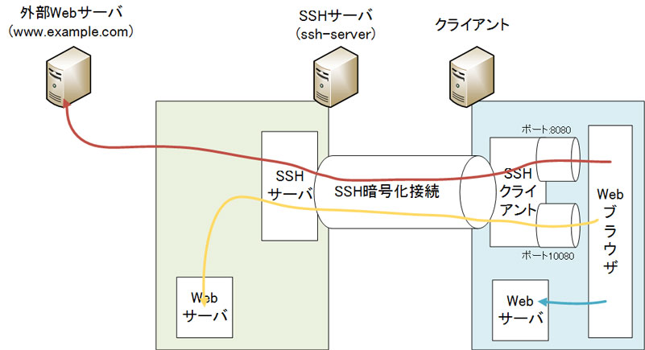
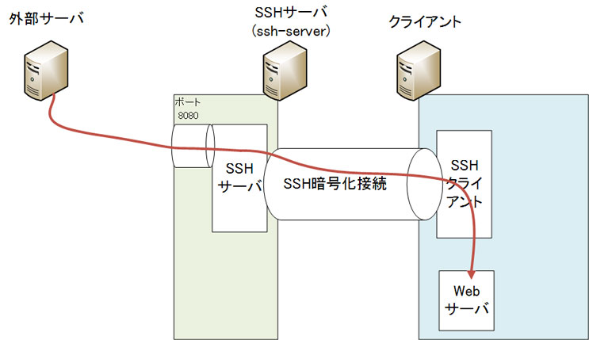
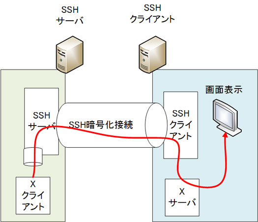
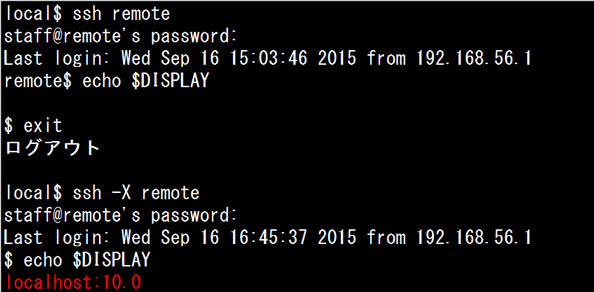

- 問題ID : 15400 暗号化によるデータの保護
- 履歴
正解
DISPLAY環境変数が自動で設定される
解説
SSHには、他の通信を自身の作成する暗号化コネクション内に流す機能があります。この機能はポートフォワーディングによって実現されています。ポートフォワーディングとは、あるポートで受け取った通信を別のポートに転送する処理のことです。
この機能を使って、ネットワークを介したXサーバ・クライアントの通信を暗号化し、接続を簡略化できます（X11フォワーディング）。この機能を使うには、SSHサーバの設定で「X11Forwarding yes」となっている必要があります。
X11フォワーディングはSSHクライアント上でsshコマンドを以下の書式で実行します。
$ ssh -X [SSH接続ユーザー名@]SSHサーバアドレス [Xクライアントコマンド]
このコマンドにより、SSHサーバ上のXクライアントが、SSHクライアントのXサーバ画面上に表示されます。なお、-Xオプションを付けてssh接続すると、Xクライアントの表示用にDISPLAY環境変数が自動で設定されます。
よって正解は
・DISPLAY環境変数が自動で設定される
です。
その他の選択肢については以下のとおりです。
・DISPLAYシェル変数が自動で設定される
自動設定されるのはDISPLAY環境変数のため、誤りです。
・ローカルポートフォワーディングを有効にする
X11フォワーディングを有効にするので、誤りです。
・暗号化接続を無効化する
・接続先サーバが存在するか確認する
sshコマンドにそのようなオプションはないため、誤りです。
参考
SSHには、他の通信を自身の作成する暗号化コネクション内に流す機能があります。この機能はポートフォワーディングによって実現されています。ポートフォワーディングとは、あるポートで受け取った通信を別のポートに転送する処理のことです。
以下はSSHポートフォワーディングの例です。

Webブラウザで「http://localhost」に接続すると、自身の内部で動作するWebサーバにアクセスしに行きます（青色矢印）。ここで、SSHサーバへの接続に以下の2つのポートフォワーディング設定を行います。
・ローカルのポート8080への接続は、外部Webサーバのポート80へ転送する（赤色矢印）
・ローカルのポート10080への接続は、SSHサーバのポート80（Webサーバ）へ転送する（黄色矢印）
次にWebブラウザでの接続先を変更すると、アクセス先が変更されます。
・接続先「http://localhost:8080」→ 外部Webサーバへ接続
・接続先「http://localhost:10080」→ SSHサーバ内のWebサーバへ接続
こ のように、SSHがポートを用意して通信を中継することをSSHポートフォワーディングといいます。また、SSHの暗号化接続内を通ることで、SSHサー バ・クライアント間でのHTTP通信は外部から内容を盗み見ることができなくなります。こういった特性から、SSHポートフォワーディングのことを 「SSHトンネリング」と呼ぶこともあります。そのため、SSHポートフォワーディング設定を行うことを俗に「トンネルを掘る」ということもあります。
図のSSHポートフォワーディングは、SSHクライアント上でsshコマンドを以下の書式で実行します。-Lは「Local port forwarding」のためのオプションです。
ssh -L 転送対象ポート番号:SSHサーバから見た接続先アドレス:SSHサーバからの接続先ポート番号 [SSH接続ユーザー名@]SSHサーバアドレス
・ローカルのポート8080への接続を、外部Webサーバ（www.example.com）のポート80へ転送する（赤色矢印）
$ ssh -L 8080:www.example.com:80 user@ssh-server
・ローカルのポート10080への接続は、SSHサーバ自身（localhost）のポート80（Webサーバ）へ転送する（黄色矢印）
$ ssh -L 10080:localhost:80 user@ssh-server
逆向きの「Remote port forwarding」もあります。この場合はSSHサーバが転送用ポートを用意し、SSHクライアントの指定されたポートに転送します。
以下の例では、「SSHサーバのポート8080へのアクセスは、SSHクライアントのポート80（Webサーバ）へ転送」されます。

リモートポートフォワーディングはSSHクライアント上でsshコマンドを以下の書式で実行します。-Rは「Remote port forwarding」のためのオプションです。
ssh -R 転送対象ポート番号:SSHクライアントから見た接続先アドレス:SSHクライアントからの接続先ポート番号 [SSH接続ユーザー名@]SSHサーバアドレス
・SSHサーバのポート8080へのアクセスは、SSHクライアントのポート80（Webサーバ）へ転送する
$ ssh -R 8080:localhost:80 user@ssh-server
この機能をネットワークを介したXサーバ・クライアントの通信に特化し、通信の暗号化、設定作業を簡略化できるX11フォワーディングがあります。Xサー バ・クライアント間の通信は暗号化されていないため、入力したキー情報など盗み見られる恐れがあります。X11フォワーディングを使うことで、ローカルの XサーバとリモートのXクライアントで安全に通信を行うことができます。
この機能を使うには、SSHサーバの設定で「X11Forwarding yes」となっている必要があります。

X11フォワーディングはSSHクライアント上でsshコマンドを以下の書式で実行します。
$ ssh -X [SSH接続ユーザー名@]SSHサーバアドレス [Xクライアントコマンド]
このコマンドにより、SSHサーバ上のXクライアントが、SSHクライアントのXサーバ画面上に表示されます。なお、-Xオプションを付けてssh接続する と、Xクライアントの表示用にDISPLAY環境変数が自動で設定されます。そのため、-Xオプション付きで接続したsshセッションでは、起動したXク ライアントはすべてSSHクライアント（ローカル）側のXサーバに表示されます。
実行例）
